Artwork: Dan Nowakowski/Nicholas Taylor
Mechanobiology of Bacteria
Arizona State University
April 2022
Navish Wadhwa
Harvard University
How does a cell sense its environment?
 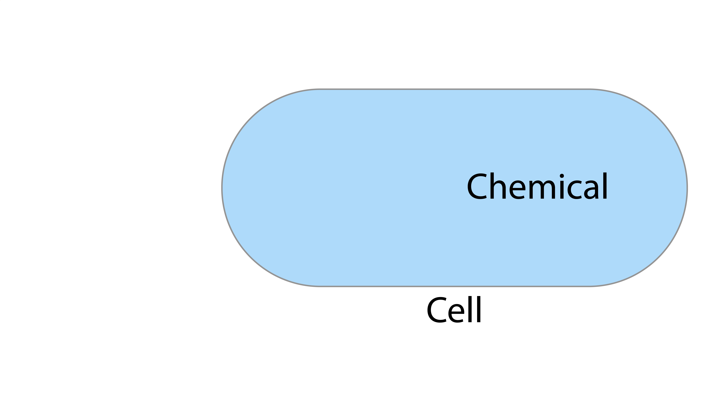
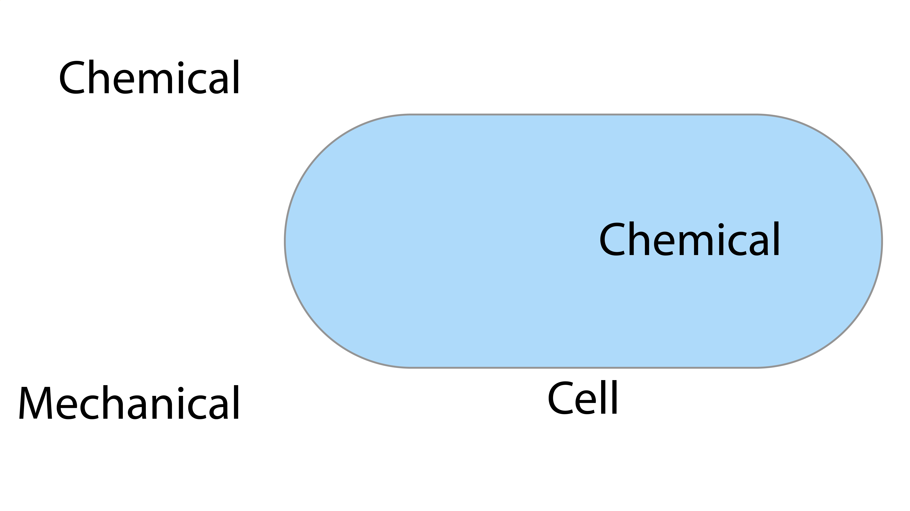
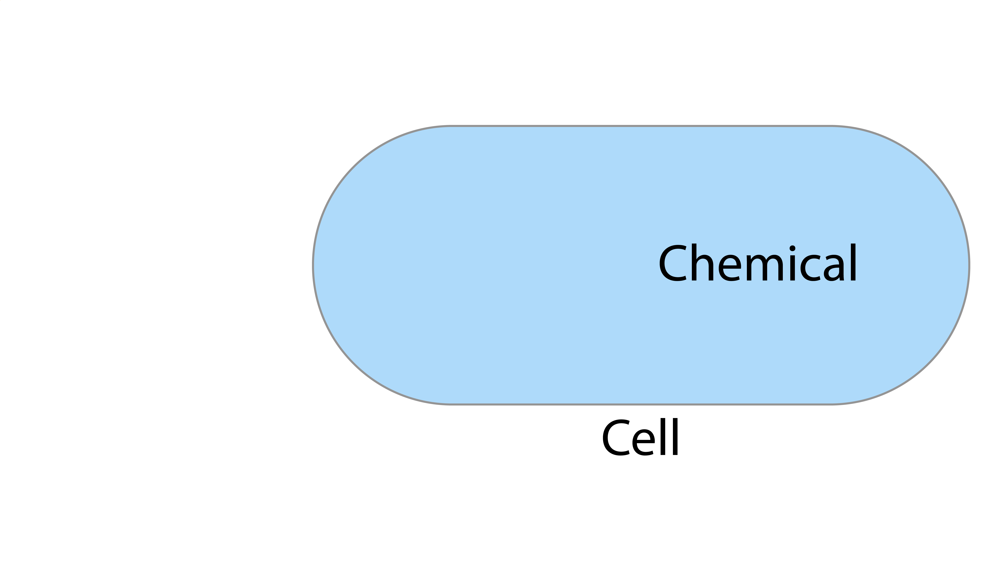
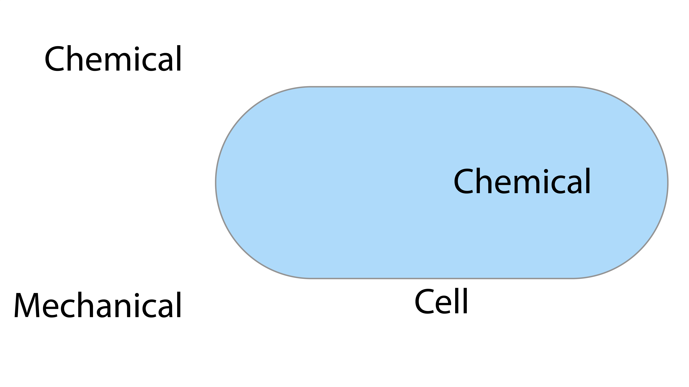


My lab will use bacteria as a model to elucidate mechano-chemical transduction
Bacteria experience a variety of mechanical stimuli
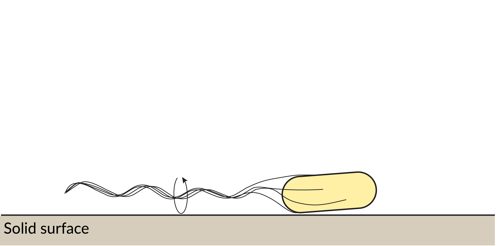
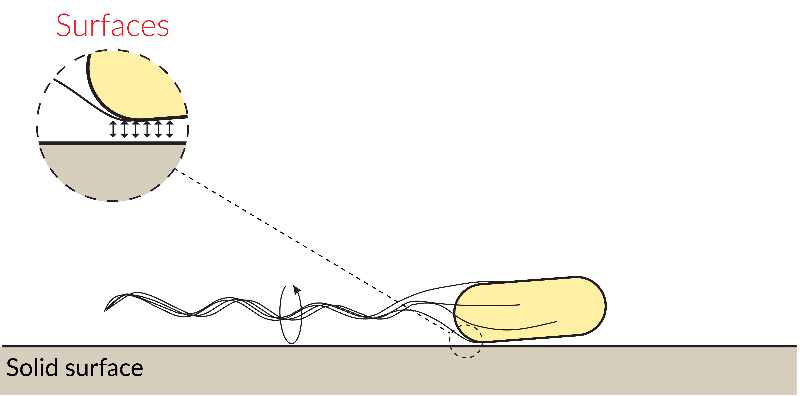
 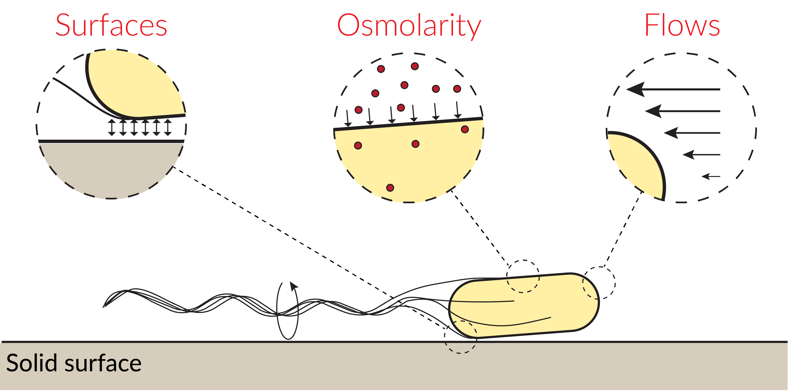
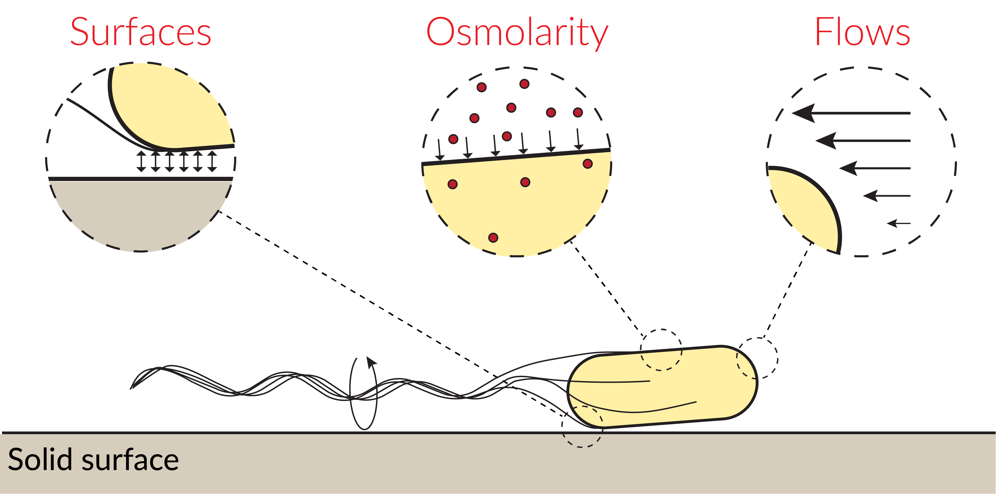
 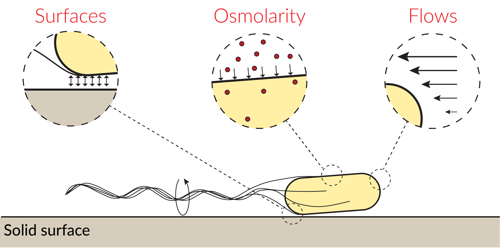
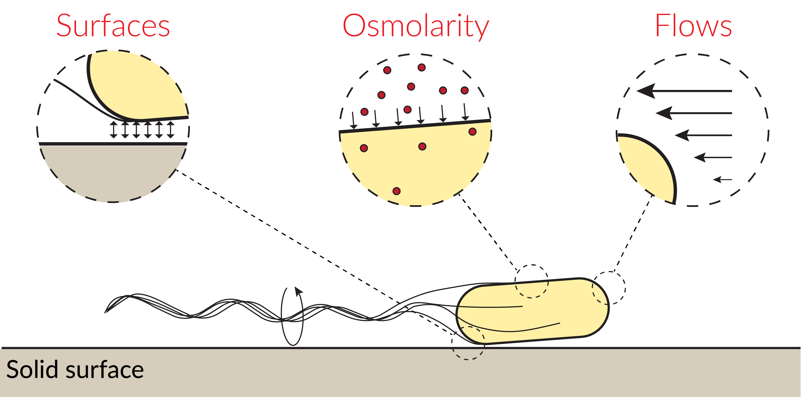
How do bacteria sense surfaces?
Bacteria sense surfaces before biofilm formation


Flagella sense and adapt to changes in mechanical load


Hypothesis: Flagella are an input to a mechanosensing signaling netowrk


Determine the components and the dynamics of flagellar mechanosensing network
Dynamics: Simultaneous electrorotation and cDG measurements


Components: High-throughput genetics


Other projects
- Where do stator units go?
- How does motor rotation affect stator remodeling?
Summary of surface sensing
- Delineate surface sensing pathways
- Help prevent biofilm formation
- Initially supported by a NIH K99/R00 award
How do bacteria sense flows?
Bacteria live in a fluid environment
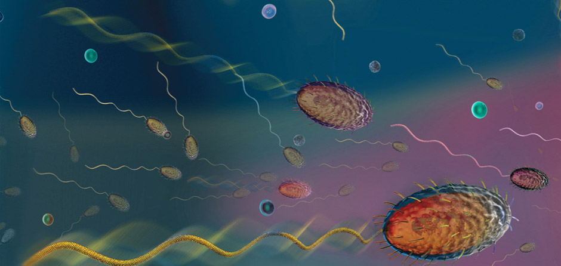Roman Stocker lab
How do bacteria sense flows?
Flow sensing is common among aquatic organisms

Thomas Kiørboe
Flow sensing discovered in surface attached bacteria